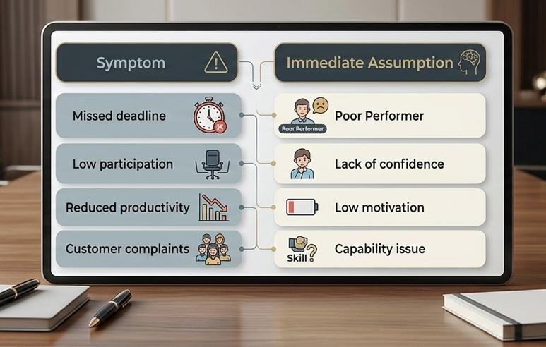
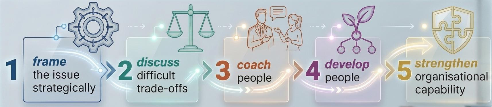
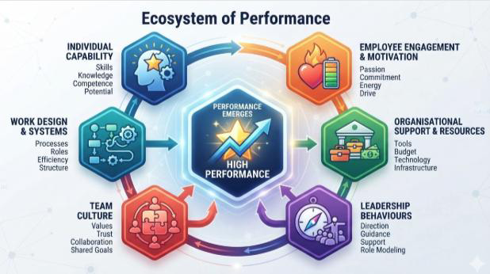
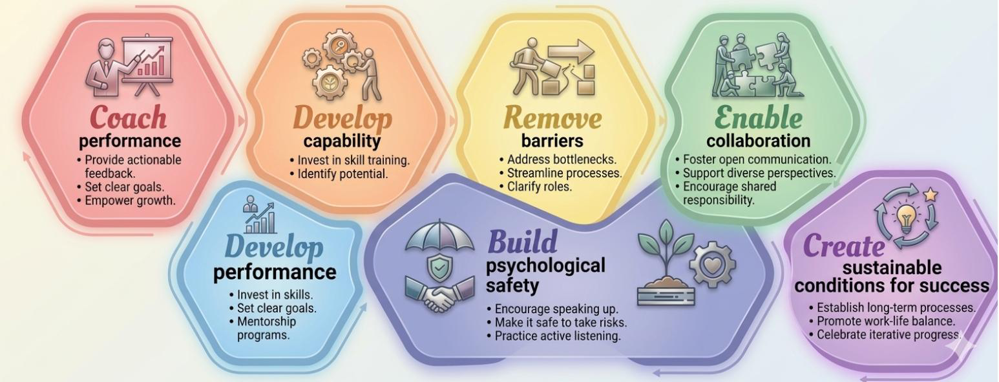
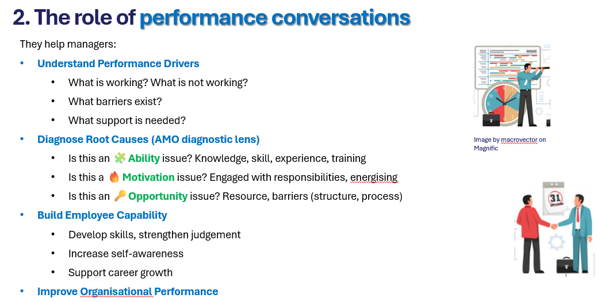
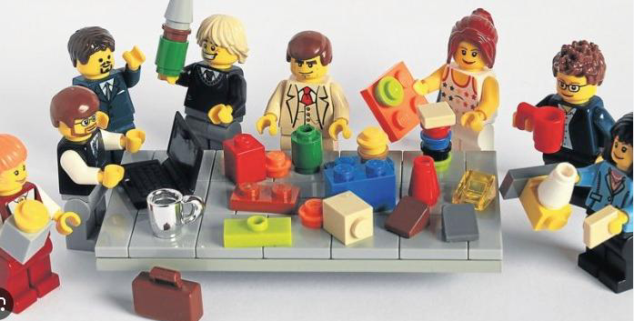
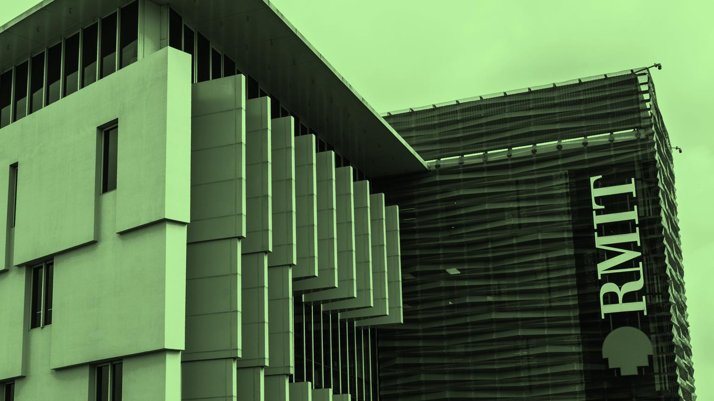

Chủ đề 4: Thực hành trao đổi hiệu suất với khung AMO
Topic 4: Practise Performance Conversation with AMO Framework — bản đối chiếu Anh – Việt
PGS. Elaine Chew (Yin Teng Chew) · 46 slide
Quy ước của bản dịch. Mỗi slide là một khối: cột bên trái là nguyên văn tiếng Anh (màu xám), cột bên phải là bản tiếng Việt (màu đen). Nội dung được dịch sát theo từng slide, không lược bỏ.
Thuật ngữ chuyên môn được dịch sang tiếng Việt kèm nguyên bản tiếng Anh trong ngoặc ở lần xuất hiện đầu tiên. Tên riêng, tên tổ chức, tên khung phương pháp (AMO, SAIL, LEGO Serious Play®) và địa chỉ liên hệ giữ nguyên. Các đường dẫn video trong slide gốc được giữ nguyên.
Slide 01Title
Topic 5: Practise Performance Conversation with AMO Framework
Chủ đề 5: Thực hành trao đổi hiệu suất với khung AMO
Assoc. Professor Yin Teng (Elaine) Chew
Phó Giáo sư Yin Teng (Elaine) Chew
Bản gốc đánh số slide là “Topic 5”; giữ nguyên theo nguyên bản. Trong bộ tài liệu này vẫn xếp là Chủ đề 4.
Slide 02About Elaine Chew
About Elaine Chew
Giới thiệu Elaine Chew
Qualifications Bằng cấp
Ph.D. in International Development (Nagoya University, Japan); scholarship. Master’s degree in Commerce (Otaru Shoodai, Japan); scholarship. Bachelor of Business (Management) (Monash University, Australia). Golden Key award recipient. HRM Scholar Award.
Tiến sĩ Phát triển Quốc tế (Đại học Nagoya, Nhật Bản); học bổng. Thạc sĩ Thương mại (Otaru Shoodai, Nhật Bản); học bổng. Cử nhân Kinh doanh (Quản trị) (Đại học Monash, Úc). Nhận giải Golden Key. Giải HRM Scholar Award.
Current portfolio at RMIT Vietnam Công việc hiện tại tại RMIT Việt Nam
Interim Head of Department of Management. Management, Tourism, Organizational Change research cluster leader. Teaches MBA & undergraduate.
Quyền Trưởng Bộ môn Quản trị. Trưởng nhóm nghiên cứu Quản trị, Du lịch và Thay đổi tổ chức. Giảng dạy chương trình MBA và cử nhân.
Work experience Kinh nghiệm làm việc
16 years Associate Professor at Monash University (Ranked 37th), Malaysia. 4 years in other universities in Malaysia. 1 year in an Australian marketing research consulting firm. Designed & launched mystery shopping program for customer service assurance for a bank. Developed a consultancy report for SMECorp, Malaysia for G-to-G lean production skill transfer in the automotive industry (2010). Developed a consultancy report for JETRO, Japan for semiconductor sector in Malaysia for bilateral FDI with Japan (2022). Co-developed a consultancy report for KPMG Hong Kong & PBEC on global sourcing, movement and challenges (2023).
16 năm làm Phó Giáo sư tại Đại học Monash (xếp hạng 37) ở Malaysia. 4 năm tại các đại học khác ở Malaysia. 1 năm tại một công ty tư vấn nghiên cứu marketing của Úc. Thiết kế và triển khai chương trình khách hàng bí mật (mystery shopping) nhằm đảm bảo chất lượng dịch vụ khách hàng cho một ngân hàng. Thực hiện báo cáo tư vấn cho SMECorp Malaysia về chuyển giao kỹ năng sản xuất tinh gọn cấp chính phủ trong ngành ô tô (2010). Thực hiện báo cáo tư vấn cho JETRO Nhật Bản về ngành bán dẫn tại Malaysia phục vụ dòng FDI song phương với Nhật (2022). Đồng thực hiện báo cáo tư vấn cho KPMG Hong Kong & PBEC về nguồn cung ứng toàn cầu, sự dịch chuyển và các thách thức (2023).
Skills & competencies Kỹ năng & năng lực
Publications in the field of HRM, organizational psychology, business strategy. Certified LSP facilitator. Trained in lean production system. 13 PhD supervision completions. Won 5 Teaching Excellence awards at Monash Malaysia. Won 2 Research Excellence awards at Monash Malaysia.
Công bố khoa học trong lĩnh vực quản trị nhân sự, tâm lý học tổ chức, chiến lược kinh doanh. Facilitator được chứng nhận của LEGO Serious Play (LSP). Được đào tạo về hệ thống sản xuất tinh gọn. Hướng dẫn thành công 13 nghiên cứu sinh tiến sĩ. Nhận 5 giải Xuất sắc trong Giảng dạy tại Monash Malaysia. Nhận 2 giải Xuất sắc trong Nghiên cứu tại Monash Malaysia.
PGS. Elaine Chew
Slide 03Session outline
Session outline
Nội dung buổi học
1
Explain the principles of sustainable performance management and the role of continuous performance conversations.
Giải thích các nguyên tắc của quản trị hiệu suất bền vững (sustainable performance management) và vai trò của những cuộc trao đổi hiệu suất liên tục.
Thực hiện các cuộc trao đổi hiệu suất – làm rõ kỳ vọng, củng cố tinh thần chịu trách nhiệm và hỗ trợ nhân viên phát triển.
3
Apply coaching and feedback techniques to address performance challenges and promote individual growth.
Áp dụng các kỹ thuật khai vấn (coaching) và phản hồi để xử lý các vấn đề hiệu suất và thúc đẩy sự phát triển của từng cá nhân.
4
Reframe Performance Discussions from Operational Problems to Strategic Decisions
Định hình lại các cuộc thảo luận về hiệu suất: từ vấn đề vận hành thành quyết định mang tính chiến lược.
Slide 04Section divider
Sustainable performance management & role of performance conversation
Quản trị hiệu suất bền vững & vai trò của cuộc trao đổi hiệu suất
Slide phân mục, chỉ có tiêu đề và hình minh hoạ (Image by Freepik on Magnific).
Hình minh hoạ của slide phân mục (Image by Freepik on Magnific).
Slide 051 · Traditional performance management
1. Traditional performance management
1. Quản trị hiệu suất truyền thống
Often focuses on evaluating past performance:
Did targets get achieved?
Was the project delivered?
Did the employee meet expectations?
What rating should be assigned?
Thường tập trung vào đánh giá hiệu suất trong quá khứ:
Các mục tiêu có đạt được hay không?
Dự án có được hoàn thành hay không?
Nhân viên có đáp ứng kỳ vọng hay không?
Nên xếp mức đánh giá nào?
Important questions but they are insufficient in today's technology environment.
Đây là những câu hỏi quan trọng, nhưng chưa đủ trong môi trường công nghệ hiện nay.
High performance is not simply about achieving short-term results.
Hiệu suất cao không đơn thuần là đạt được kết quả ngắn hạn.
Sustainable performance management focuses on ensuring employees can continue performing effectively over time without burnout, disengagement, capability gaps, or organisational barriers.
Quản trị hiệu suất bền vững tập trung vào việc bảo đảm nhân viên có thể tiếp tục làm việc hiệu quả theo thời gian mà không bị kiệt sức, mất gắn kết, thiếu hụt năng lực hay bị các rào cản của tổ chức cản trở.
Hình minh hoạ trong slide (Image by Upklyak on Magnific).
Slide 062 · Sustainable performance conversations
2. Sustainable performance conversations
2. Trao đổi hiệu suất bền vững
Sustainable performance conversations are not mainly about giving feedback.
Trao đổi hiệu suất bền vững không chủ yếu là để đưa ra phản hồi.
They are about helping managers think like executives.
Chúng nhằm giúp người quản lý tư duy như một nhà điều hành.
Rushing to the causes → bias in judging performance too quickly.
Vội vàng kết luận về nguyên nhân → thiên kiến do phán xét hiệu suất quá nhanh.

Hình trong slide — Triệu chứng → Giả định tức thời (Symptom → Immediate Assumption). Diễn giải theo cấu trúc hình ở bên dưới.
Symptom
Triệu chứng
Immediate Assumption
Giả định tức thời
Missed deadline
Trễ hạn
→
Poor Performer
“Làm việc kém”
Low participation
Ít tham gia
→
Lack of confidence
“Thiếu tự tin”
Reduced productivity
Năng suất giảm
→
Low motivation
“Thiếu động lực”
Customer complaints
Khách hàng phàn nàn
→
Capability issue
“Vấn đề năng lực”
Slide 07Video · Communication
Communication… — Text · Non Face-to-Face conversation
Giao tiếp… — Tin nhắn · Trao đổi không gặp mặt trực tiếp
Slide chiếu hai video ngắn: youtube.com/shorts/Tonq7qO_4xw · youtube.com/shorts/hYIb_uex0U4
Hai ảnh chụp từ hai video ngắn được chiếu trong slide.
Slide 08Discussion prompt
Do you want such a manager for performance management?
Bạn có muốn một người quản lý như vậy phụ trách quản trị hiệu suất không?
GOALS: SURPRISE!!
MỤC TIÊU: BẤT NGỜ!!
REVIEW RATINGS: MEANINGLESS
ĐIỂM ĐÁNH GIÁ: VÔ NGHĨA
REWARDS → COST-SAVING
KHEN THƯỞNG → TIẾT GIẢM CHI PHÍ
‘FEEDBACK’ & ‘MOTIVATION’
‘PHẢN HỒI’ & ‘ĐỘNG LỰC’
Slide gốc minh hoạ mỗi ý bằng một mẩu truyện tranh Dilbert (Scott Adams) về các buổi đánh giá hiệu suất: mục tiêu chưa từng được nói ra, xếp hạng theo đường phân phối chuẩn, khen ngợi kèm hồ sơ lưu để phòng khi sa thải. Không sao chép lại tranh trong bản đối chiếu này vì lý do bản quyền.
Slide 09Video · Discussion
Why is this performance review not a good part of performance conversation?
Vì sao buổi đánh giá hiệu suất này không phải là một phần tốt của cuộc trao đổi hiệu suất?
Video: youtube.com/watch?v=hI1Xejz5YnU
Ảnh chụp từ video buổi đánh giá hiệu suất được chiếu trong slide.
Slide 102 · Sustainable performance conversations
Leaders resist the temptation to judge performance too quickly → audited mindset to reduce bias.
Người lãnh đạo cưỡng lại thôi thúc phán xét hiệu suất quá nhanh → tư duy được rà soát để giảm thiên kiến.
They diagnose whether the underlying issue is Ability, Motivation, Opportunity, or a combination of all three.
Họ chẩn đoán xem vấn đề gốc là Năng lực (Ability), Động lực (Motivation), Điều kiện – cơ hội (Opportunity), hay kết hợp cả ba.
Ongoing conversation: Not until performance review.
Trao đổi liên tục: không chờ đến kỳ đánh giá hiệu suất mới nói.

Dải hình trong slide — năm bước. Diễn giải theo cấu trúc hình ở bên dưới.
1
frame the issue strategically
đóng khung vấn đề theo hướng chiến lược
›
2
discuss difficult trade-offs
thảo luận các đánh đổi khó
›
3
coach people
khai vấn con người
›
4
develop people
phát triển con người
›
5
strengthen organisational capability
củng cố năng lực tổ chức
Slide 11Ecosystem of Performance
Sustainable performance management recognises that performance emerges from the interaction of:
Quản trị hiệu suất bền vững thừa nhận rằng hiệu suất xuất hiện từ sự tương tác của:

Hình trong slide — Ecosystem of Performance (Hệ sinh thái của hiệu suất). Tương tác của sáu yếu tố tạo ra hiệu suất cao; diễn giải theo cấu trúc hình ở bên dưới.
Ecosystem of Performance
Hệ sinh thái của hiệu suất
INDIVIDUAL CAPABILITY
Năng lực cá nhân
Skills · Knowledge · Competence · Potential
Kỹ năng · Kiến thức · Năng lực · Tiềm năng
WORK DESIGN & SYSTEMS
Thiết kế công việc & hệ thống
Processes · Roles · Efficiency · Structure
Quy trình · Vai trò · Hiệu quả · Cấu trúc
TEAM CULTURE
Văn hoá nhóm
Values · Trust · Collaboration · Shared Goals
Giá trị · Niềm tin · Hợp tác · Mục tiêu chung
PERFORMANCE EMERGES
HIGH PERFORMANCE
Hiệu suất cao
EMPLOYEE ENGAGEMENT & MOTIVATION
Gắn kết & động lực của nhân viên
Passion · Commitment · Energy · Drive
Đam mê · Cam kết · Năng lượng · Động lực
ORGANISATIONAL SUPPORT & RESOURCES
Hỗ trợ & nguồn lực của tổ chức
Tools · Budget · Technology · Infrastructure
Công cụ · Ngân sách · Công nghệ · Hạ tầng
LEADERSHIP BEHAVIOURS
Hành vi lãnh đạo
Direction · Guidance · Support · Role Modeling
Định hướng · Dẫn dắt · Hỗ trợ · Làm gương
Slide 122 · Sustainable performance conversations
Often, organizational problems are often disguised as employee problems.
Rất thường xuyên, vấn đề của tổ chức được ngụy trang thành vấn đề của nhân viên.
Ví dụ: quy trình kém, hạn chế về nguồn lực, ưu tiên không rõ ràng, khối lượng công việc quá tải.
As a result, managers must look beyond measuring performance outcomes and seek to understand the conditions/context that enable or constrain performance.
Vì vậy, người quản lý phải nhìn xa hơn việc đo lường kết quả hiệu suất và tìm hiểu các điều kiện/bối cảnh đang tạo điều kiện hay đang cản trở hiệu suất.
Slide này dùng lại hình Ecosystem of Performance đã xuất hiện ở slide 11.
Slide 132 · The changing role of managers
2. The changing role of managers
2. Vai trò đang thay đổi của người quản lý
Today, managers are increasingly expected to: (see the roles in the figure)
Ngày nay, người quản lý ngày càng được kỳ vọng phải: (xem các vai trò trong hình)
This requires a shift in mindset. Instead of asking: “How do I improve this employee's performance?”
Điều này đòi hỏi một sự chuyển dịch trong tư duy. Thay vì hỏi: “Làm sao để tôi cải thiện hiệu suất của nhân viên này?”
Managers should ask: “What is helping or preventing this employee from performing at their best?”
Người quản lý nên hỏi: “Điều gì đang giúp hoặc đang ngăn nhân viên này làm việc ở mức tốt nhất của họ?”

Hình trong slide — bảy vai trò của người quản lý, xếp thành hai hàng (bốn ô trên, ba ô dưới). Diễn giải theo cấu trúc hình ở bên dưới.
Coach performance
Khai vấn hiệu suất
Provide actionable feedback Phản hồi khả thi
Set clear goals Đặt mục tiêu rõ ràng
Empower growth Trao quyền để phát triển
Develop capability
Phát triển năng lực
Invest in skill training Đầu tư đào tạo kỹ năng
Identify potential Nhận diện tiềm năng
Remove barriers
Loại bỏ rào cản
Address bottlenecks Xử lý điểm nghẽn
Streamline processes Tinh gọn quy trình
Clarify roles Làm rõ vai trò
Enable collaboration
Tạo điều kiện hợp tác
Foster open communication Khuyến khích giao tiếp mở
Support diverse perspectives Tôn trọng góc nhìn đa dạng
Practice active listening Thực hành lắng nghe chủ động
Create sustainable conditions for success
Tạo điều kiện bền vững cho thành công
Establish long term processes Thiết lập quy trình dài hạn
Promote work-life balance Thúc đẩy cân bằng công việc – cuộc sống
Celebrate iterative progress Ghi nhận tiến bộ từng bước
Slide 142 · The role of performance conversations
2. The role of performance conversations — they help managers:
2. Vai trò của các cuộc trao đổi hiệu suất — giúp người quản lý:
Understand Performance Drivers
What is working? What is not working?
What barriers exist?
What support is needed?
Hiểu các yếu tố dẫn dắt hiệu suất
Điều gì đang hiệu quả? Điều gì không hiệu quả?
Đang tồn tại những rào cản nào?
Cần hỗ trợ những gì?
Diagnose Root Causes (AMO diagnostic lens)
Is this an Ability issue? Knowledge, skill, experience, training
Is this a Motivation issue? Engaged with responsibilities, energising
Is this an Opportunity issue? Resource, barriers (structure, process)
Chẩn đoán nguyên nhân gốc (lăng kính chẩn đoán AMO)
Đây có phải vấn đề Năng lực? Kiến thức, kỹ năng, kinh nghiệm, đào tạo
Đây có phải vấn đề Động lực? Mức độ gắn kết với trách nhiệm, cảm giác được tiếp thêm năng lượng
Đây có phải vấn đề Điều kiện – cơ hội? Nguồn lực, rào cản (cấu trúc, quy trình)
Build Employee Capability
Develop skills, strengthen judgement
Increase self-awareness
Support career growth
Xây dựng năng lực nhân viên
Phát triển kỹ năng, củng cố khả năng phán đoán
Tăng khả năng tự nhận thức
Hỗ trợ phát triển sự nghiệp
Improve Organisational Performance
Cải thiện hiệu suất của tổ chức
Hai hình minh hoạ trong slide (Image by macrovector on Magnific).
Slide 152.3 · Not all conversations are the same
2.3 Not all performance conversations are the same
2.3 Không phải cuộc trao đổi hiệu suất nào cũng giống nhau
Move away from “Performance = Results” Mindset. Performance conversation is NOT to judge performance but to improve it.
Rời khỏi tư duy “Hiệu suất = Kết quả”. Cuộc trao đổi hiệu suất KHÔNG nhằm phán xét hiệu suất mà để cải thiện nó.
No.
Performance level Mức hiệu suất
Conversation focus Trọng tâm cuộc trao đổi
Manager’s role Vai trò của quản lý
1
Exceeding expectations Vượt kỳ vọng
Growth & stretch opportunities Cơ hội phát triển & thử thách mở rộng
Coach Người khai vấn
2
Meeting expectations Đạt kỳ vọng
Development & continuous improvement Phát triển & cải tiến liên tục
Facilitator Người dẫn dắt, tạo điều kiện
3
Below expectations Dưới kỳ vọng
Performance improvement & support Cải thiện hiệu suất & hỗ trợ
Diagnostician & coach Người chẩn đoán & khai vấn
4
Persistent Underperformance Hiệu suất kém kéo dài
Performance recovery & accountability Phục hồi hiệu suất & trách nhiệm giải trình
Coach Người khai vấn
Slide 16Video · Listening skills
Communication… — Listening skills
Giao tiếp… — Kỹ năng lắng nghe
Hai video ngắn: youtube.com/shorts/SP6RuDD-2WQ · youtube.com/shorts/WGxUAedAfvg
Hai ảnh chụp từ hai video ngắn về kỹ năng lắng nghe.
Slide 173 · Performance conversations · AMO
3. Performance conversations
3. Các cuộc trao đổi hiệu suất
Move away from “Performance = Results” Mindset. How many of you have employees who consistently hit targets but there are other employees that you worry about? Why? Are the reasons related to performance?
Rời khỏi tư duy “Hiệu suất = Kết quả”. Bao nhiêu người trong số các bạn có nhân viên luôn đạt chỉ tiêu, nhưng lại có những nhân viên khác khiến bạn lo lắng? Vì sao? Những lý do đó có liên quan đến hiệu suất không?
Investigate AMO when employee performance declines:
Hãy tìm hiểu theo AMO khi hiệu suất của nhân viên đi xuống:
Ability · Năng lực
Motivation · Động lực
Opportunities · Điều kiện – cơ hội
Does the employee know what good performance looks like?
Do they have the required skills?
Have expectations been clearly communicated?
Have they received adequate training?
Nhân viên có biết hiệu suất tốt trông như thế nào không?
Họ có các kỹ năng cần thiết không?
Kỳ vọng đã được truyền đạt rõ ràng chưa?
Họ đã được đào tạo đầy đủ chưa?
Does the employee want to perform?
Are they engaged?
Do they see value in the work?
Are there morale or wellbeing concerns?
Nhân viên có muốn làm tốt không?
Họ có đang gắn kết không?
Họ có thấy giá trị trong công việc không?
Có vấn đề về tinh thần hay sức khoẻ tinh thần không?
Does the employee have the resources needed?
Are processes helping or hindering?
Are priorities conflicting?
Is workload realistic?
Nhân viên có đủ nguồn lực cần thiết không?
Quy trình đang hỗ trợ hay đang cản trở?
Các ưu tiên có xung đột với nhau không?
Khối lượng công việc có khả thi không?
Slide 183.1 · Example 1
3.1 Performance conversations
3.1 Các cuộc trao đổi hiệu suất
Investigate AMO when employee performance declines. We should not immediately blame attitude.
Hãy tìm hiểu theo AMO khi hiệu suất của nhân viên đi xuống. Chúng ta không nên vội quy cho thái độ.
Example 1 An AI engineer suddenly misses milestones: Manager thinks performance slipped.
Ví dụ 1 Một kỹ sư AI bất ngờ trễ các mốc công việc: người quản lý cho rằng hiệu suất đã tụt.
Reality A new Generative AI framework was introduced. The employee has not yet mastered it.
Thực tế Một framework Generative AI mới vừa được đưa vào áp dụng. Nhân viên chưa thành thạo nó.
Diagnosis: Issue
Chẩn đoán: Vấn đề
Conversation: ?
Cuộc trao đổi: ?
Slide 193.2 · Example 2
3.2 Performance conversations
3.2 Các cuộc trao đổi hiệu suất
Investigate AMO when employee performance declines. We should not immediately blame attitude.
Hãy tìm hiểu theo AMO khi hiệu suất của nhân viên đi xuống. Chúng ta không nên vội quy cho thái độ.
Example 2 A Product Owner fails to deliver roadmap objectives: Manager thinks performance slipped.
Ví dụ 2 Một Product Owner không hoàn thành các mục tiêu trong lộ trình sản phẩm: người quản lý cho rằng hiệu suất đã tụt.
Reality
Engineering priorities changed three times.
Business stakeholders added new requirements weekly.
Thực tế
Ưu tiên của bộ phận kỹ thuật thay đổi ba lần.
Các bên liên quan phía kinh doanh bổ sung yêu cầu mới hằng tuần.
Diagnosis: Issue
Chẩn đoán: Vấn đề
This is not an employee performance problem. It is a work system problem.
Đây không phải vấn đề hiệu suất của nhân viên. Đây là vấn đề của hệ thống công việc.
Conversation: ?
Cuộc trao đổi: ?
Slide 20Video
What is commonly important/valuable to people may not be true
Điều mà người ta thường cho là quan trọng/có giá trị có thể không đúng
Hai video ngắn: youtube.com/shorts/E5885eYb41c · youtube.com/shorts/94M7wLbVYps
Hai ảnh chụp từ hai video ngắn được chiếu trong slide.
Slide 213.3 · Example 3
3.3 Performance conversations
3.3 Các cuộc trao đổi hiệu suất
Investigate AMO when employee performance declines.
Hãy tìm hiểu theo AMO khi hiệu suất của nhân viên đi xuống.
Example 3 A Data Scientist's results remain acceptable: Manager thinks performance is a no-surprise but could do better.
Ví dụ 3 Kết quả của một Data Scientist vẫn ở mức chấp nhận được: người quản lý thấy không có gì bất ngờ, nhưng cho rằng lẽ ra có thể tốt hơn.
Reality
Participation is minimal. Team engagement is declining.
Innovation suggestions have disappeared.
Thực tế
Mức độ tham gia rất ít. Sự gắn kết với nhóm đang giảm.
Các đề xuất đổi mới đã biến mất.
Diagnosis: Issue
Chẩn đoán: Vấn đề
The manager must explore:
Career
Recog
Work
Người quản lý cần tìm hiểu:
Sự nghiệp (Career)
Ghi nhận (Recog)
Công việc (Work)
Conversation: ?
Cuộc trao đổi: ?
Hình minh hoạ trong slide (Image by Lifestylememory).
Slide 224 · SAIL
4. Conversation approach for underperformance: SAIL
4. Cách tiếp cận cuộc trao đổi khi hiệu suất chưa đạt: SAIL
S
State the gap
Nêu rõ khoảng cách hiệu suất
A
Ask and understand
Hỏi và tìm hiểu
I
Identify root causes (AMO)
Xác định nguyên nhân gốc (theo AMO)
L
Launch improvement actions
Khởi động các hành động cải thiện

Trong slide gốc, phần hình là ảnh chụp lại slide “The role of performance conversations”.
Slide 23Video · Evidence
Evidence is a must for performance management
Bằng chứng là điều bắt buộc trong quản trị hiệu suất
Video: youtube.com/shorts/vEXKEKaWxfk
Ảnh chụp từ video được chiếu trong slide.
Slide 244.1 · State the gap (1)
4.1 SAIL (1) — S = State the gap
4.1 SAIL (1) — S = Nêu rõ khoảng cách hiệu suất
Use objective facts:
KPI reports
Customer feedback
Error rates
Project delivery data
Stakeholder feedback
Dùng dữ kiện khách quan:
Báo cáo KPI
Phản hồi của khách hàng
Tỷ lệ lỗi
Dữ liệu tiến độ giao dự án
Phản hồi của các bên liên quan
Examples
“Over the last three months, the target was 95% service accuracy. The average achieved was 77%. This gap requires improvement.”
“I want to discuss your recent performance results because they are currently below the expected standard for the role.”
“I noticed recent project milestones have been difficult to achieve.”
Ví dụ
“Trong ba tháng vừa qua, mục tiêu là 95% độ chính xác dịch vụ. Mức trung bình đạt được là 77%. Khoảng cách này cần được cải thiện.”
“Tôi muốn trao đổi về kết quả làm việc gần đây của bạn, vì hiện nay nó đang dưới chuẩn kỳ vọng của vị trí này.”
“Tôi nhận thấy các mốc dự án gần đây khá khó hoàn thành.”
Hình minh hoạ trong slide.
Slide 254.1 · State the gap (2)
4.1 SAIL (2) — S = State the gap
4.1 SAIL (2) — S = Nêu rõ khoảng cách hiệu suất
Example “Over the last three months, the target was 95% service accuracy. The average achieved was 77%.”
Ví dụ “Trong ba tháng vừa qua, mục tiêu là 95% độ chính xác dịch vụ. Mức trung bình đạt được là 77%.”
Avoid
“Your performance has been poor. Go and fix it”
“Why are you underperforming?”
“Your performance is unacceptable. You need to improve”
“You need to improve your attitude.”
Tránh
“Kết quả làm việc của bạn tệ. Tự đi mà sửa.”
“Sao bạn lại làm việc kém như vậy?”
“Hiệu suất của bạn không thể chấp nhận được. Bạn phải cải thiện.”
“Bạn cần cải thiện thái độ của mình.”
Try using these
“Let's explore what is making it difficult to achieve the expected results.” (remove barriers)
“What specific actions can help close the performance gap?”
“Let's discuss what success would look like & how we can get there.”
“I'd like to better understand your experience and explore what support may help.”
Hãy thử dùng những câu này
“Hãy cùng tìm hiểu điều gì đang làm cho việc đạt kết quả kỳ vọng trở nên khó khăn.” (loại bỏ rào cản)
“Những hành động cụ thể nào có thể giúp thu hẹp khoảng cách hiệu suất?”
“Hãy cùng bàn xem thành công sẽ trông như thế nào và làm sao để đạt được.”
“Tôi muốn hiểu rõ hơn trải nghiệm của bạn và cùng xem hình thức hỗ trợ nào có thể giúp được.”
Slide 26Video · Being fair and honest
State the gap: Being fair and honest in courting
Nêu rõ khoảng cách: sự công bằng và thẳng thắn trong chuyện hẹn hò
Here is a couple. Is the man attractive? Is the lady attractive?
Đây là một cặp đôi. Người đàn ông có hấp dẫn không? Người phụ nữ có hấp dẫn không?
Slide chiếu ảnh một cặp đôi để lấy phán đoán tức thời của người học. Video: youtube.com/shorts/PKpff2iTQDY
Ảnh cặp đôi được chiếu để người học đưa ra phán đoán tức thời.
Slide 274.2 · Ask and understand
4.2 SAIL — A = Ask and understand
4.2 SAIL — A = Hỏi và tìm hiểu
Use diagnostic questioning → What conditions are enabling or constraining sustainable performance?
Dùng câu hỏi chẩn đoán → Những điều kiện nào đang tạo điều kiện hoặc đang cản trở hiệu suất bền vững?
What challenges are affecting your performance?
“What percentage of critical work depends solely on you?”
What obstacles are you encountering?
“Which activities should you stop doing?”
What support would be helpful?
“Which responsibilities could be transferred?”
“Where are you experiencing overload?”
Những khó khăn nào đang ảnh hưởng đến hiệu suất của bạn?
“Bao nhiêu phần trăm công việc quan trọng chỉ phụ thuộc vào một mình bạn?”
Bạn đang gặp phải những trở ngại nào?
“Những việc nào bạn nên ngừng làm?”
Hình thức hỗ trợ nào sẽ hữu ích?
“Những trách nhiệm nào có thể chuyển giao cho người khác?”
“Bạn đang bị quá tải ở đâu?”
Slide 284.3 · Identify root causes
4.3 SAIL — I = Identify root causes
4.3 SAIL — I = Xác định nguyên nhân gốc
Map responses against AMO. Discuss:
Đối chiếu câu trả lời với khung AMO. Trao đổi:
“From what you've shared, it seems workload and competing priorities may be major contributors.” (Opportunity)
“Từ những gì bạn chia sẻ, có vẻ khối lượng công việc và các ưu tiên xung đột là những nguyên nhân chính.” (Điều kiện – cơ hội)
“From our conversation, it seems that the work has become mundane and less meaningful to motivate you.” (Motivation)
“Qua cuộc trao đổi, có vẻ công việc đã trở nên đơn điệu và ít ý nghĩa nên không còn tạo động lực cho bạn.” (Động lực)
“From what you've shared, it seems the AI direction we are moving towards is too demanding for your current skills.” (Ability)
“Từ những gì bạn chia sẻ, có vẻ hướng đi về AI mà chúng ta đang theo đuổi đòi hỏi cao hơn mức kỹ năng hiện tại của bạn.” (Năng lực)
Slide 294.4 · Launch improvement actions
4.4 SAIL — L = Launch improvement actions
4.4 SAIL — L = Khởi động các hành động cải thiện
Discuss and agree on:
Step 1: Expectations
Step 2: Support required
Step 3: Timeline
Step 4: Follow-up checkpoints
Trao đổi và thống nhất về:
Bước 1: Kỳ vọng
Bước 2: Hỗ trợ cần thiết
Bước 3: Mốc thời gian
Bước 4: Các điểm kiểm tra tiến độ
Performance recovery agreement
Bản cam kết phục hồi hiệu suất
Hình minh hoạ trong slide.
Slide 304.4 · Step 1 · Expectations
Step 1: Agree on performance expectations
Bước 1: Thống nhất về kỳ vọng hiệu suất
Discussion Question
What performance standard needs to be achieved?
What evidence will demonstrate improvement?
What behaviours are expected?
Câu hỏi thảo luận
Chuẩn hiệu suất nào cần đạt được?
Bằng chứng nào sẽ cho thấy có sự cải thiện?
Những hành vi nào được kỳ vọng?
Purpose Clarify exactly what successful performance looks like
Specific performance outcomes
Behavioural expectations
Quality standards
Productivity targets
Mục đích Làm rõ chính xác hiệu suất thành công trông như thế nào
Kết quả hiệu suất cụ thể
Kỳ vọng về hành vi
Tiêu chuẩn chất lượng
Chỉ tiêu năng suất
Current → Required performance → Evidence
Hiện tại → Hiệu suất yêu cầu → Bằng chứng
Slide 314.4 · Step 2 · Ability-based support
Step 2: Agree on support mechanism — Ability-based support
Bước 2: Thống nhất cơ chế hỗ trợ — hỗ trợ theo hướng Năng lực
Skill training
Refresher program
Mentoring
Shadowing high performers
Job aids and guides
Đào tạo kỹ năng
Chương trình ôn luyện, cập nhật lại
Cố vấn (mentoring)
Đi kèm học việc từ người làm tốt (shadowing)
Tài liệu hướng dẫn, cẩm nang công việc
Slide 324.4 · Step 2 · Ability example
Ability-based support — agreement example
Hỗ trợ theo hướng Năng lực — ví dụ cam kết
Skill training, Mentoring, Job aids and guides
Đào tạo kỹ năng, cố vấn, tài liệu hướng dẫn công việc
Step 2 · Employee
Attend advanced R programming skills
Tham gia khoá kỹ năng lập trình R nâng cao
Step 2 · Manager / team leader
Provide weekly coaching for 30 minutes
What progress have you made?
What challenges remain?
What support is needed?
Khai vấn 30 phút mỗi tuần
Bạn đã tiến bộ được những gì?
Còn những khó khăn nào?
Bạn cần hỗ trợ gì?
Step 3 · Duration
4 weeks
4 tuần
Step 4 · Progress noting
Upskilling for each of the 4 weeks
Ghi nhận việc nâng cấp kỹ năng theo từng tuần trong 4 tuần
Slide 334.4 · Step 2 · Motivation example
Motivation-based support — agreement example
Hỗ trợ theo hướng Động lực — ví dụ cam kết
Career development discussion, More meaningful work assignments, Recognition for improvement
Trao đổi về phát triển sự nghiệp, phân công công việc có ý nghĩa hơn, ghi nhận sự tiến bộ
Step 2 · Employee
Complete weekly reflection on career development related new projects/responsibilities/tasks
Hoàn thành bài tự đánh giá hằng tuần về các dự án/trách nhiệm/nhiệm vụ mới gắn với phát triển sự nghiệp
Step 2 · Manager / team leader
Provide fortnightly career coaching discussion
What progress have you made?
What challenges remain?
What support is needed?
Trao đổi khai vấn về sự nghiệp hai tuần một lần
Bạn đã tiến bộ được những gì?
Còn những khó khăn nào?
Bạn cần hỗ trợ gì?
Step 3 · Duration
12 weeks
12 tuần
Step 4 · Progress noting
Learning reflection
Bài tự đánh giá về việc học
Slide 344.4 · Step 2 · Role clarity & wellbeing
Motivation-based support — clarification of role importance, wellbeing support
Hỗ trợ theo hướng Động lực — làm rõ tầm quan trọng của vai trò, hỗ trợ sức khoẻ tinh thần
Step 2 · Employee
Complete weekly reflection on progress
Hoàn thành bài tự đánh giá tiến độ hằng tuần
Step 2 · Manager / team leader
Provide fortnightly role clarification discussion
Trao đổi làm rõ vai trò hai tuần một lần
Step 3 · Duration
4 weeks
4 tuần
Step 4 · Progress noting
Learning reflection
Bài tự đánh giá về việc học
Slide 354.4 · Step 2 · Opportunity-based support
Opportunity-based support
Hỗ trợ theo hướng Điều kiện – cơ hội
Workload reallocation
Process simplification
Resource provision
Clarification of priorities
Removal of barriers
Phân bổ lại khối lượng công việc
Đơn giản hoá quy trình
Cung cấp nguồn lực
Làm rõ các ưu tiên
Loại bỏ rào cản
Step 2 · Employee
Focus on Project A & B only (need similar skills)
Chỉ tập trung vào Dự án A và B (vì cần các kỹ năng tương tự nhau)
Step 2 · Manager / team leader
Transfer Project C responsibilities to another team member
Chuyển trách nhiệm Dự án C sang một thành viên khác trong nhóm
Step 3 & 4 · Timeline & progress
Depend on operational needs
Tuỳ theo nhu cầu vận hành
Hình minh hoạ trong slide (Image by Lifestylememory).
Slide 36LEGO Serious Play®
Unleashing Potentials through Playful Learning via the Lego Serious Play® Methodology
Khai phóng tiềm năng qua học tập bằng trò chơi với phương pháp LEGO Serious Play®
Hình bìa trong slide về phương pháp LEGO Serious Play®.
Slide 37Recognition
Honorable Mention Recognition for Education Excellence
Giải thưởng Ghi nhận (Honorable Mention) cho Xuất sắc trong Giáo dục
Elaine YinTeng Chew — Interim Head of Department, Management, TBS (Certified LSP Facilitator), RMIT Vietnam · Professor Robert McClelland — Dean of The Business School, RMIT University, Vietnam · Dr. Trang Le — Lecturer (Certified LSP Facilitator) · Dr. Thao Luong — Senior Program Manager (Certified LSP Facilitator) · Dr. Jessica Helmi — Senior Lecturer (Certified LSP Facilitator) · Dr. Chuyen Nguyen — Lecturer
Elaine YinTeng Chew — Quyền Trưởng Bộ môn Quản trị, TBS (Facilitator LSP được chứng nhận), RMIT Việt Nam · Giáo sư Robert McClelland — Trưởng Khoa Kinh doanh, Đại học RMIT Việt Nam · TS. Trang Lê — Giảng viên (Facilitator LSP được chứng nhận) · TS. Thảo Lương — Senior Program Manager (Facilitator LSP được chứng nhận) · TS. Jessica Helmi — Giảng viên cao cấp (Facilitator LSP được chứng nhận) · TS. Chuyên Nguyễn — Giảng viên
Ảnh chân dung các thành viên được ghi nhận trong slide.
Slide 38Recognition
Honorable Mention Recognition for Education Excellence
Giải thưởng Ghi nhận (Honorable Mention) cho Xuất sắc trong Giáo dục
Assoc Prof. Elaine Chew — Interim Head of Department, Management, TBS (Certified LSP Facilitator), RMIT Vietnam · Dr. Trang Le — Lecturer (Certified LSP Facilitator) · Mr. Vincent Ha Quach — Associate Lecturer (Certified LSP Facilitator)
PGS. Elaine Chew — Quyền Trưởng Bộ môn Quản trị, TBS (Facilitator LSP được chứng nhận), RMIT Việt Nam · TS. Trang Lê — Giảng viên (Facilitator LSP được chứng nhận) · Ông Vincent Hà Quách — Trợ giảng viên (Facilitator LSP được chứng nhận)
Ảnh chân dung các thành viên được ghi nhận trong slide.
Slide 39LSP pedagogy
Why learning through playing (LSP pedagogy)?
Vì sao học thông qua chơi (phương pháp LSP)?
Cognitive · Social · Emotional
Nhận thức · Xã hội · Cảm xúc
FUN LEARNING · COMMUNICATION · TEAMWORK & BRAINSTORMING · PARTICIPATIVE → SOLUTION
HỌC MÀ VUI · GIAO TIẾP · LÀM VIỆC NHÓM & ĐỘNG NÃO · CÙNG THAM GIA → GIẢI PHÁP

Các hình minh hoạ trong slide về học thông qua chơi với LEGO Serious Play®.
Slide 40LSP applications
LSP in the classroom & corporate training
LSP trong lớp học & đào tạo doanh nghiệp
Entrepreneurship & MBA courses (Design thinking, HRM) — Problem-solving (Kyons); Team building; Problem identification
Các môn Khởi nghiệp & MBA (Tư duy thiết kế, Quản trị nhân sự) — Giải quyết vấn đề (Kyons); Xây dựng đội nhóm; Nhận diện vấn đề
Negotiation and conflict management course — Negotiation skills; Effective roleplay; Engagement and feedback
Môn Đàm phán và quản trị xung đột — Kỹ năng đàm phán; Đóng vai hiệu quả; Gắn kết và phản hồi
Cross-cultural communication course — Identification of challenges & solution development
Môn Giao tiếp đa văn hoá — Nhận diện thách thức & phát triển giải pháp
LSP® to unpack the Singapore Red Cross Business Challenge (SIM Integrate Business Perspective for revenue generation)
Dùng LSP® để giải mã Singapore Red Cross Business Challenge (SIM Integrate Business Perspective về tạo doanh thu)
Corporate training: Leadership skill development (Executive Presence, Communication etc)
Đào tạo doanh nghiệp: Phát triển kỹ năng lãnh đạo (Phong thái điều hành, Giao tiếp, v.v.)
Hình minh hoạ trong slide.
Slide 41Transition
Let's (Seriously) play!
Cùng chơi (một cách nghiêm túc)!
Hình minh hoạ trong slide “Let’s (Seriously) play!”.
Slide 42Activity · Your play time
Your play time!!!
Đến lượt bạn chơi!!!
Question for ideas Considering Zalo's company culture and what you learnt today, how could Zalo improve performance conversation?
Câu hỏi lấy ý tưởng Xét đến văn hoá công ty của Zalo và những gì bạn học được hôm nay, Zalo có thể cải thiện việc trao đổi hiệu suất như thế nào?
In 3 minutes, based on your ideas, build a LEGO model that shows your ideas for Zalo's performance management/conversation.
Trong 3 phút, dựa trên ý tưởng của mình, hãy xây một mô hình LEGO thể hiện ý tưởng của bạn cho việc quản trị/trao đổi hiệu suất tại Zalo.
Hình minh hoạ trong slide phần hoạt động xây mô hình LEGO.
Slide 43Activity · Photo upload
Your LEGO model photo time!!!
Đến lúc chụp ảnh mô hình LEGO của bạn!!!
Take a photo. Upload your LEGO model photo onto Padlet with (I) the title of your model, (II) a description of your model (less than 10 words in English or no limit for Vietnamese language).
Chụp một tấm ảnh. Tải ảnh mô hình LEGO của bạn lên Padlet kèm (I) tên mô hình, (II) phần mô tả mô hình (dưới 10 từ nếu viết bằng tiếng Anh, không giới hạn nếu viết bằng tiếng Việt).
Hình hướng dẫn chụp ảnh và tải mô hình lên Padlet.
Slide 44Activity · Group photo upload
Your group model photo time!!!
Đến lúc chụp ảnh mô hình của nhóm!!!
Take a photo. Upload your LEGO model photo onto Padlet with (I) the title of your model, (II) a description of your model (less than 10 words in English or no limit for Vietnamese language).
Chụp một tấm ảnh. Tải ảnh mô hình LEGO của nhóm lên Padlet kèm (I) tên mô hình, (II) phần mô tả mô hình (dưới 10 từ nếu viết bằng tiếng Anh, không giới hạn nếu viết bằng tiếng Việt).
Hình hướng dẫn chụp ảnh và tải mô hình lên Padlet (giống slide 43).
Slide 45—
Slide chỉ có hình minh hoạ, không có chữ.
Slide 46Close
Thank you! — Ready for what's next
Xin cảm ơn! — Sẵn sàng cho chặng tiếp theo
Position title: Interim Head of Department, Management, The Business School Name: Associate Professor Elaine Chew Email address: elaine.chew@rmit.edu.vn
Chức danh: Quyền Trưởng Bộ môn Quản trị, Khoa Kinh doanh Họ tên: Phó Giáo sư Elaine Chew Email: elaine.chew@rmit.edu.vn

Hình minh hoạ trong slide kết.
Topic 4 · Practise Performance ConversationsBản đối chiếu Anh – Việt